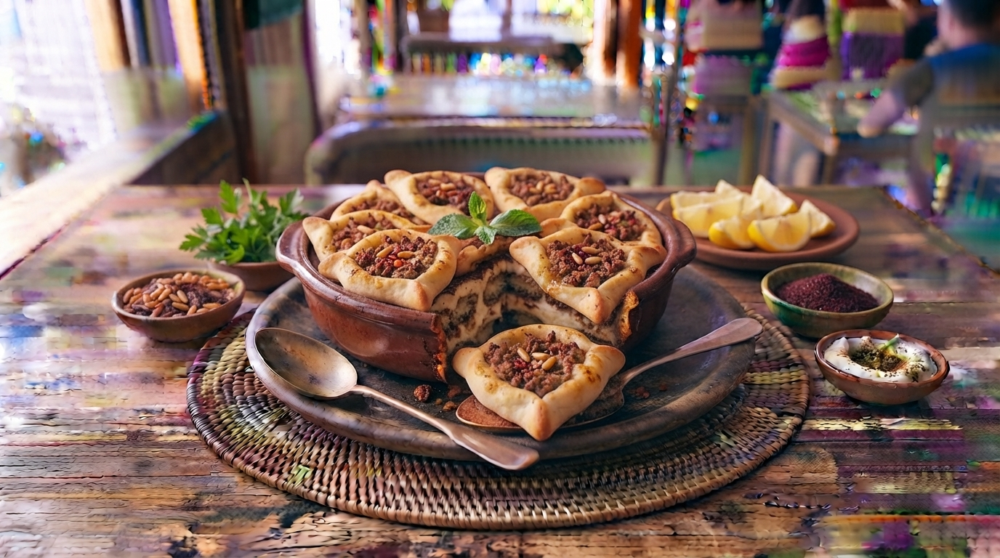

Esfiha de Carne Libanesa (Sfiha)
Salgado tradicional libanês com massa leve e macia, recheado com carne moída temperada com cebola, tomate, sumo de limão e especiarias aromáticas.

⏱️ Tempo: 1h 30min
🍽️ Rendimento: 15 unidades
🔥 Dificuldade: Média
Ingredientes
- 500g de farinha de trigo e 10g de fermento biológico
- 300ml de água morna, 1 colher de açúcar e sal
- 400g de carne moída (patinho ou acém)
- 2 tomates picados finamente e 1 cebola grande picada
- Sumo de 1 limão e mistura de especiarias (pimenta síria)
Modo de Preparo
- Prepare a massa misturando a farinha, fermento, água, açúcar e sal. Deixe levedar por 45 minutos.
- Para o recheio, misture a carne moída crua com a cebola picadinha, o tomate, o sumo de limão e a pimenta síria (o recheio vai cru para o forno).
- Divida a massa em pequenas bolinhas, abra em discos e coloque o recheio de carne no centro, modelando em formato triangular ou aberto.
- Asse em forno pré-aquecido a 220°C por cerca de 15 minutos até dourarem.